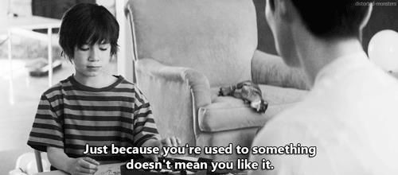
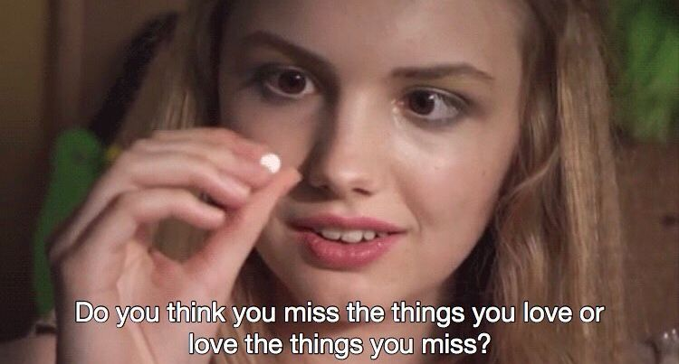
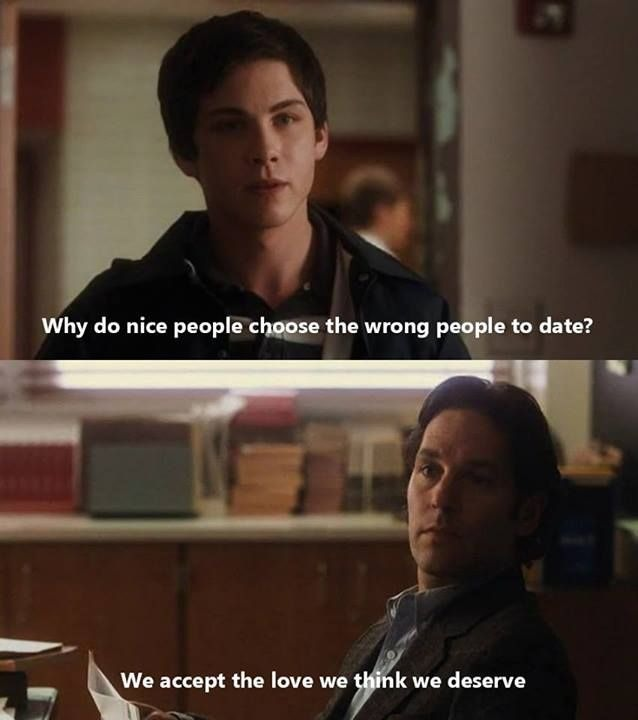
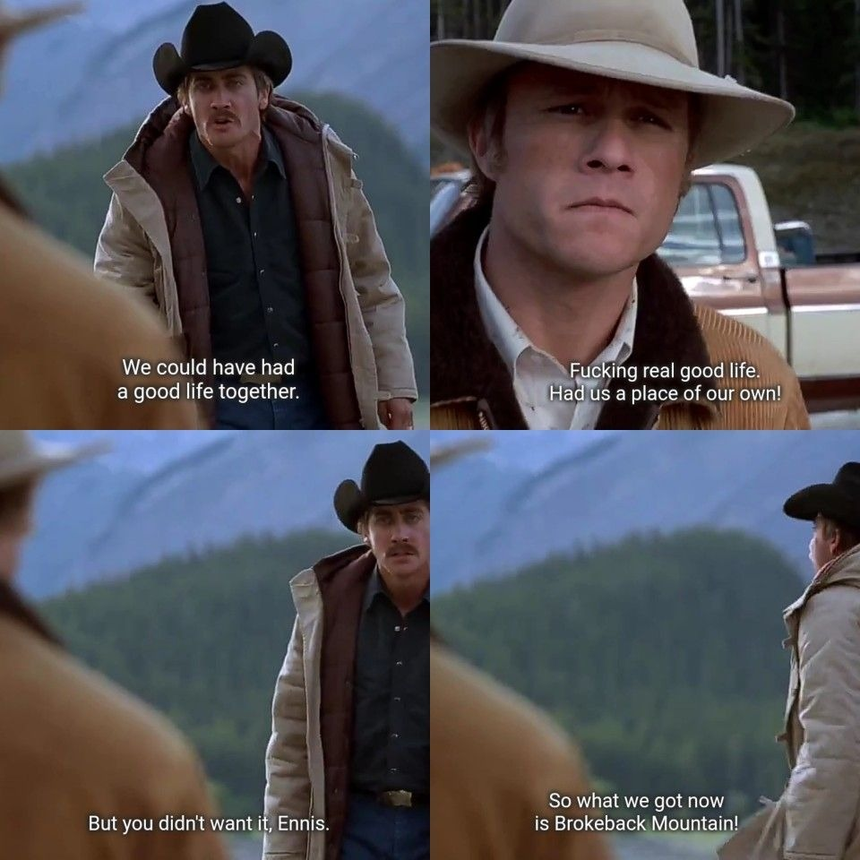
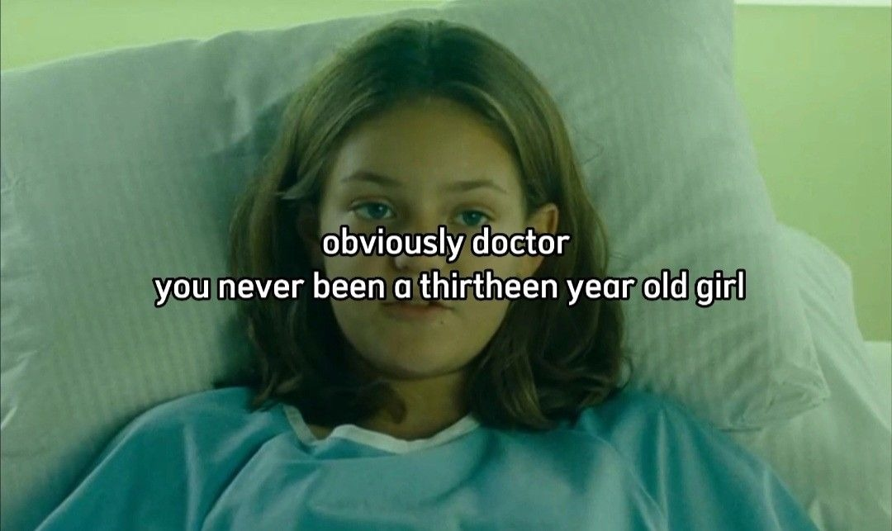
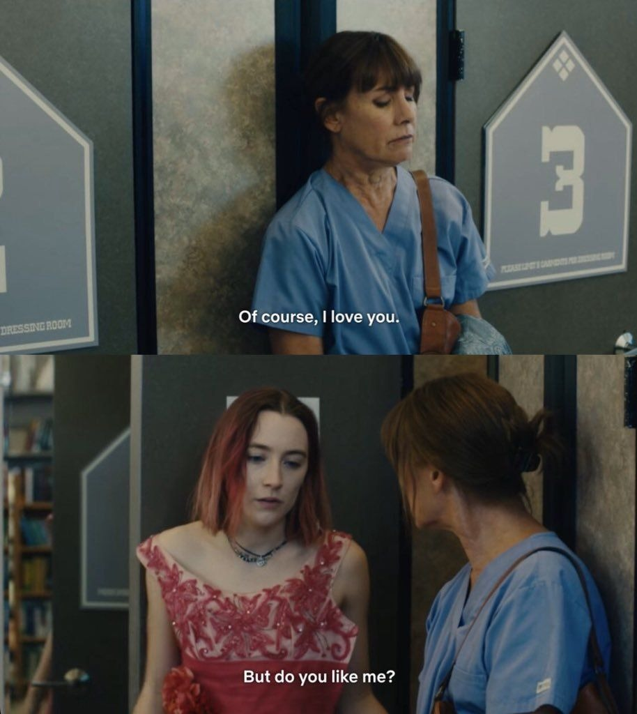
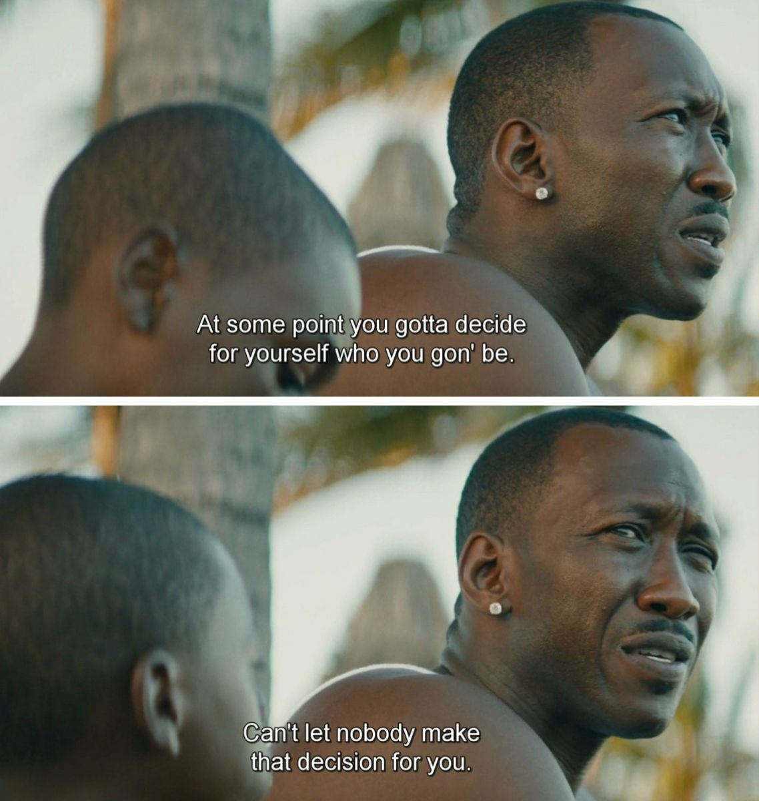
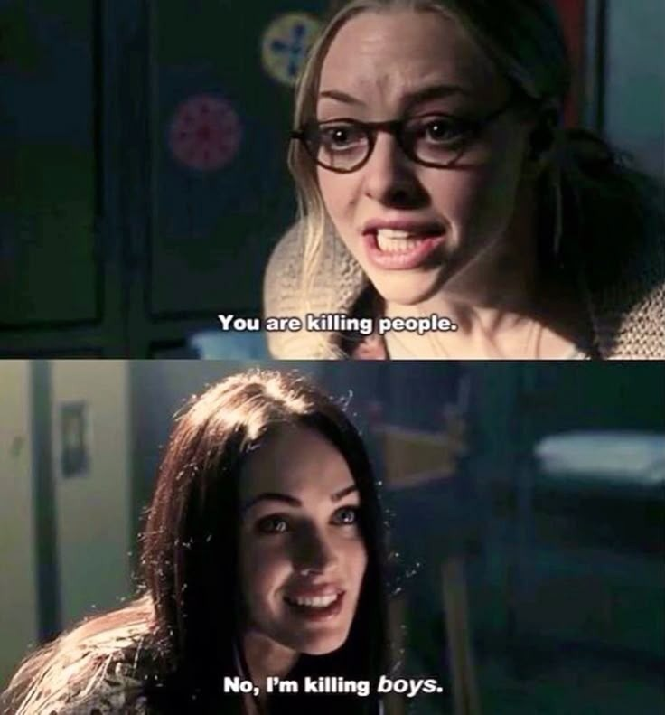
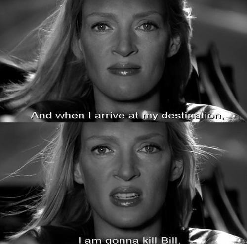

O hábito confunde, mas o peito não engana.

A nostalgia tem essa mania feia de romantizar o que já passou.

A forma como a gente se enxerga dita o tipo de afeto que deixa entrar.
E se o único jeito de não sentir mal for parar de sentir qualquer coisa pra sempre?

O medo de arriscar custa o futuro que a gente poderia ter vivido.

Cecilia was 13.

O afeto de verdade exige aceitar quem a outra pessoa é, não só o papel que ela ocupa.

Ter coragem de se definir por conta própria é o primeiro passo para a liberdade.

Quando a ironia é o único escudo para rebater o absurdo do mundo.

Nada segura alguém que sabe exatamente onde quer chegar e o que precisa fazer.